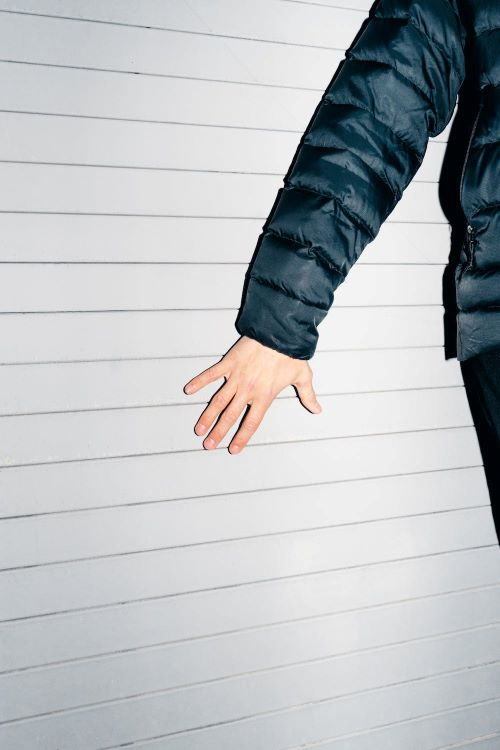

about me
a tiny shallow village where it all began...
we are a product of our environment, probably more than we'd care to admit. growing up in a small village by the highlands helped me shape a profound yet playful relationship with the small details that surround us and that we usually go unnoticed. once you notice them you realize life never stops being interesting. there is always something that catches my attention, and i never stop freezing moments in time. perhaps, i thought i would have seen it all one day, but the reality is far from it. more adventures await, and i would love you to venture with me on this journey.